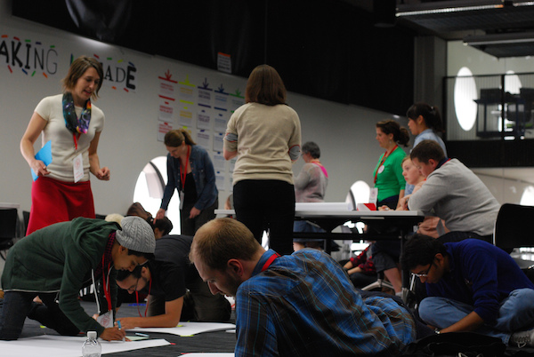
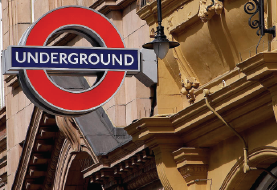
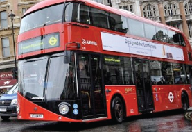
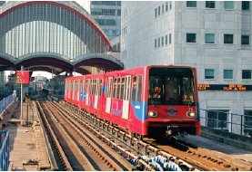
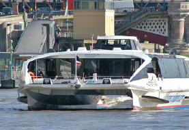
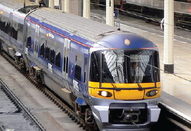
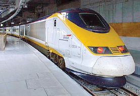

What to Expect
Participating at MozFest
MozFest is a yearly festival with hundreds of passionate people exploring the Web, learning together, and making things that can change the world. It's very hands-on and immersive. Sometimes it will feel chaotic, but everyone is open-minded and eager to help you make and learn with them.
Participants of every age and experience are welcome. We believe that everyone has something to share and something to learn. Youth are especially encouraged to come and lead sessions, but MozFest is truly an event for all ages! There's a creche on-site as well as activities for young people and industry experts.
MozFest runs for three days, beginning on Friday evening with a "Science Fair," where we demo exciting projects from across the web. Saturday and Sunday are full days of sessions, hacking and good coffee. There is a party on Saturday night, and the festival ends on Sunday evening with a closing demo party, showcasing what we made together.

MozFest Program
Friday October 24
- 18:00 to 21:00: Science Fair evening reception
Saturday October 25
- 8:00 Doors open
- 9:00 Welcome and opening keynotes by Mark Surman (Mozilla) & Mary Moloney (CoderDojo)
- 10:00 Morning sessions begin
- 12:30 Lunch
- 14:00 Afternoon sessions begin
- 17:30-18:30 Evening lighting talks by Mozilla community members
Sunday October 26
- 9:00 Doors open
- 10:00 Keynotes by Baroness Beeban Kidron (filmmaker and education activist) and Mitchell Baker (Mozilla)
- 11:30 Morning sessions begin
- 13:00 Lunch
- 15:00 Afternoon sessions begin
- 18:00 Demo party
Main Festival Venue
Ravensbourne
6 Penrose WayGreenwich Peninsula
London
SE10 0EW

Travel Tips & Tricks
Passport, local currency, device charger and socks...there are some items you should never leave home without! Check out these comprehensive travel tips from seasoned Mozilla travelers.
How to get there:
-
 London Underground
Take the Jubilee Line to North Greenwich (Zone 2).
- 5 minutes from Canary Wharf
- 10 minutes from London Bridge
- 15 minutes from Waterloo
- 20 minutes from Bond Street
The Jubilee line is the only Underground route that connects with all others – so not only you can reach us easily, National Rail passengers from all over the UK can too.
It is a 2 minute walk from North Greenwich underground station to Ravensbourne. On exiting the station, please follow signs to The O2 and follow the covered walkway to The O2's main entrance. Before you reach the main entrance to The O2, turn right into Penrose Way and Ravensbourne’s entrance is on your right.
-
 Bus
Eight TfL bus routes operate to and from North Greenwich including three 24 hour bus services. Key destinations include Stratford, Charlton, Greenwich, Lewisham, Woolwich, Eltham, North Kent and Central London. Please visit www.tfl.gov.uk for timetable information.
-
 Docklands Light Railway (DLR)
Just one stop via the Jubilee line from Canary Wharf or Canning Town.
-
 Thames Clipper
We are a two minute walk from the North Greenwich Pier stop on the Thames Clipper route. Please visit the Thames Clipper website for routes, fares and journey times.
-
 National Rail
Charlton mainline station is just a short ride on either a 486, 472 or 161 bus from North Greenwich underground station. All these buses start their route from North Greenwich underground so there is no confusion as to which way to go.
Southeastern runs services to Charlton train station. Turn left out of the station and catch 486, 472 or N472 buses to North Greenwich.
-
 Eurostar
The current network takes the Eurostar into King’s Cross St. Pancras Station, from where you only need to jump on the Northern Line down to London Bridge where you can then change for the Jubilee Line.